国际专利

Data storage method and related device
李波, 邓水光, 张翼, 秦臻, 程冠杰, 严学强, 赵明宇, 习燕
欧洲专利，发明公开，EP4625882A1, 2025.
A data storage method and a related device are provided. The method includes: A first node first encrypts first data to obtain encrypted data, so that confidentiality of data can be effectively ensured. Then, a second node splits the encrypted data into P fragments. P third nodes store the P fragments, that is, one third node stores one fragment. The encrypted data may be recovered based on at least M fragments in the P fragments. Therefore, even if some nodes in the P third nodes are attacked, the encrypted data may still be recovered based on the at least M fragments in the P fragments, to effectively ensure integrity of stored data.

Identity management method and apparatus
邓水光, 程冠杰, 温盈盈, 严学强, 习燕, 李波, 王俊凡, 赵明宇
欧洲专利，发明公开，EP4625884A1, 2025.
An identity management method and apparatus are disclosed, and may be applied to a scenario with a large quantity of distributed communication nodes, for example, a vehicle-to-everything scenario. The method includes: A TA device determines a pseudonymous identity PID of a terminal device i, and sends a first parameter to the terminal device i, where the first parameter indicates the PID of the terminal device i, and the PID of the terminal device i is determined based on a real identity RID of the terminal device i. Based on this, the TA device may determine the PID for the terminal device, to protect the RID of the terminal device, in other words, protect privacy of the terminal device. In addition, the PID of the terminal device is associated with the RID of the terminal device, so that the TA device can determine the RID of the terminal device based on the PID of the terminal device, and can determine the real identity of the terminal device when the terminal device performs a malicious operation or an unauthorized operation. That is, the real identity of the terminal device can be obtained while privacy of the terminal device is protected. In other words, conditional privacy protection is implemented.

Dag job scheduling method and system
赵海亮, 邓水光, 程冠杰, 尹建伟
美国专利, 发明公开, US20250231798A1, 2025.
HA DAG job scheduling method includes following steps when a progress state of a job is updated: acquiring native feature data of each of jobs; performing embedding feature vector extraction on the native feature data based on a graph convolution neural network, and generating state feature vectors based on an extraction result; inputting the state feature vectors into a first prediction network, and predicting scheduling probability of respective candidate tasks by the first prediction network to obtain scheduling priorities of the respective candidate tasks; and selecting allocation nodes for the candidate tasks sequentially in an order of the scheduling priorities from large to small based on the state feature vectors and generating a scheduling strategy based on a selection result. The scheduling strategy provided in the disclosure can improve efficiency globally and can also reduce caching overhead of intermediate data in a job execution process.
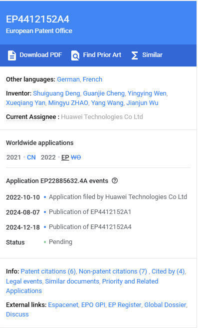
Authentication method and communication apparatus
邓水光, 程冠杰, 温盈盈, 严学强, 赵明宇, 汪洋, 吴建军
欧洲专利, 发明公开, EP4412152A4, 2024.
H04L63/0807: Network architectures or network communication protocols for network security for authentication of entities using tickets, e.g. Kerberos.
国内专利
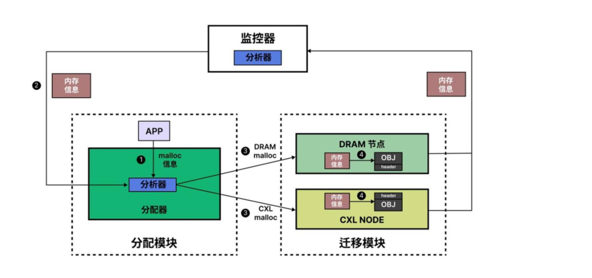
一种持久化感知的内存分层管理系统
赵新奎, 黄宇航, 程冠杰, 尹建伟, 邓水光
发明公开, CN202511078368.4, 2025.
本发明公开了一种持久化感知的内存分层管理系统。本发明包括智能内存分配模块，用于接收应用程序提交的内存请求；生命周期管理模块，用于在所述内存对象被分配后，创建并维护该对象的元数据；基于热度分级的对象迁移模块，用于在DRAM节点和CXL内存节点中分别维护活跃链表与惰性链表；以及独立持久化通道模块，用于将具有持久化需求的内存对象通过独立于常规迁移路径的专用通道异步写入持久化存储节点。本发明实现了多节点异构内存架构（即DRAM节点、CXL内存节点及磁盘）下的智能内存分配、对象生命周期管理、动态迁移机制与独立持久化路径协同，从而提升系统性能、资源利用率及数据管理的灵活性。
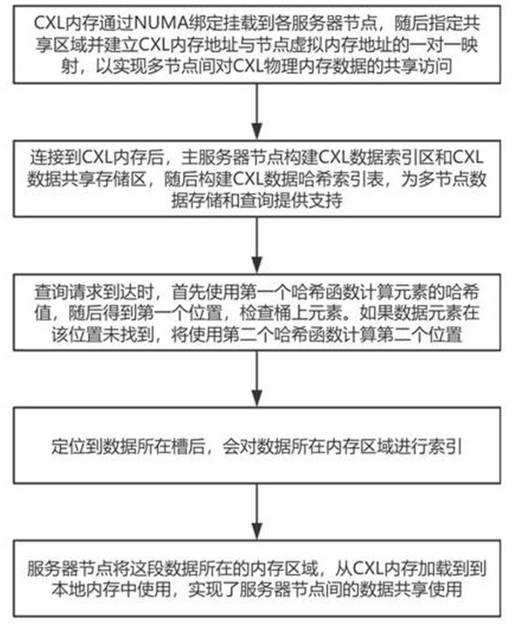
一种基于CXL内存架构的多节点高性能数据共享索引方法
赵新奎, 杨牧宇, 尹建伟, 邓水光, 程冠杰, 智晨, 张旭鸿
已授权, CN202411447448.8, 2025.
本发明公开了一种基于CXL内存架构的多节点高性能数据共享索引方法，本发明中主服务器节点用于构建CXL数据索引区和数据存储区。各服务器节点连接CXL内存设备后，通过NUMA绑定方式将CXL内存设备挂载到服务器节点，并指定共享区域，实现多节点对CXL物理内存数据的共享访问。连接到CXL内存后，主服务器节点构建CXL数据索引区和共享存储区，并通过哈希索引表支持多节点的数据存储和查询。查询请求时，通过哈希函数定位数据在哈希表中的位置，并在数据哈希索引表中进行查询和匹配，最终定位数据所在内存区域。找到数据后，服务器节点将数据从CXL内存加载到本地内存中使用，实现了跨服务器节点的数据共享。
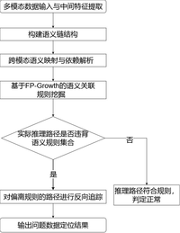
基于语义关联规则挖掘的多模态大模型问题数据溯源方法
陈雨昕, 袁巩生, 伍赛, 李环, 唐秀, 程冠杰, 王皓波, 陈刚
发明公开, CN202511213612.3, 2025.
本发明公开了一种基于语义关联规则挖掘的多模态大模型问题数据溯源方法，该方法通过获取多模态输入数据并提取中间语义特征，结合构建表示模态间语义依赖关系的语义链结构，在语义链上应用关联规则挖掘算法，生成高置信度的语义规则集合。系统包含语义特征提取模块、语义链构建模块和问题数据定位模块，能够有效提升大模型在异常处理路径中的可解释性与问题数据自动识别能力。本发明解决了传统多模态模型在问题数据溯源过程中依赖人工分析、可视化能力弱及诊断效率低下的技术难题，实现了复杂语义逻辑下的问题片段精准定位，适用于图文问答、语音理解、视频分析等多模态智能系统中的问题数据分析与模型调试领域。
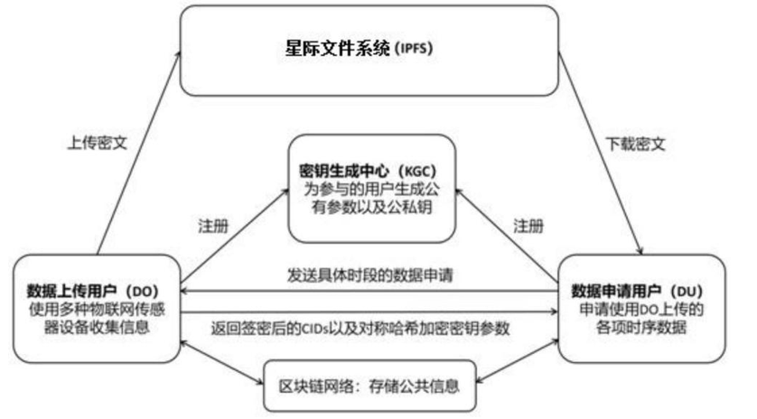
基于双向哈希链对称加密和签密的流数据共享方法、系统
程冠杰, 王艺霏, 苏韬龙, 赵海亮, 赵新奎, 黄鹂强, 邓水光, 尹建伟
已授权, CN202510240466.7, 2025.
本发明涉及数据共享技术领域中的一种基于双向哈希链对称加密和签密的流数据共享方法、系统，包括以下步骤：计算最大时间区间内第一个加密时间单位对应的原始开头左密钥、最后一个加密时间单位对应的原始结尾右密钥；基于原始开头左密钥和原始结尾右密钥，计算其余加密时间单位对应的原始加密子密钥以生成加密密钥；使用加密密钥对流数据进行对称加密，并基于申请请求获取请求时间段的响应数据，对响应数据进行签密处理，得到签密数据；将签密数据发送至数据申请用户，以使数据申请用户对签密数据进行解签密，得到响应数据，并对响应数据进行解密处理，得到目标数据，解决了现有流数据在进行点对点数据传输时，资源消耗较大，且保密性较低的问题。
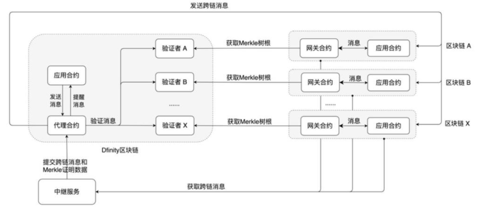
一种基于Dfinity区块链的跨链通信方法
邓水光, 陈岩, 程冠杰
已授权, CN202310088167.7, 2025.
本发明公开了一种基于Dfinity区块链的跨链通信方法，由网关合约负责在接入链上收发跨链消息请求，并将跨链消息组织成Merkle树形式；Dfinity链上的验证者合约负责从接入链上定时获取跨链消息Merkle树根，用于验证跨链消息；Dfinity链上的代理合约负责接收来自链外中继的跨链消息，将通过验证的跨链消息转发到指定的接入链上；链外中继负责从所有接入链上获取最新的跨链消息，为每个跨链消息生成Merkle证明并提交给Dfinity链上的代理合约进行处理。本发明跨链通信方法能够保证安全性，具有较高的扩展性，支持异构链间通信，且能够支持自定义的跨链消息处理逻辑，弥补了现有跨链通信方法的不足。
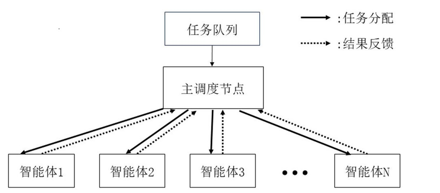
一种集中式架构下的多智能体异步协同方法及系统
程冠杰, 温盈盈, 钟冬松, 邓水光, 尹建伟
发明公开, CN202511020136.3, 2025.
本发明公开了一种集中式架构下的多智能体异步协同方法及系统，适用于智能物联网环境中异构智能体的任务调度与资源协调。所述方法采用主调度节点集中式控制机制，根据多个异构智能体的实时状态信息，结合多智能体博弈模型计算调度优先级函数，实现任务的异步分配与反馈控制。同时引入异步同步窗口机制，在不完整信息情况下仍可保持调度连续性与高效性，并通过智能体反馈延迟建模与收益函数设计实现任务分配的公平性与鲁棒性。该发明提高了系统吞吐量与响应速度，兼顾异构性与可扩展性，适用于灾害应急、工业制造、智能家居、智能交通等多智能体协作场景。
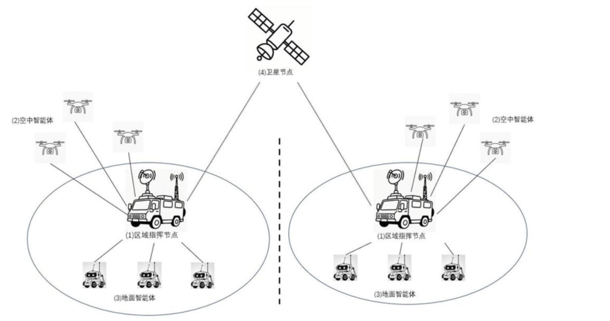
一种分布式空天地多智能体系统中的异步协同方法
程冠杰, 吴沛瀚, 赵新奎, 邓水光, 尹建伟
发明公开, CN202511020065.7, 2025.
本发明公开了一种分布式空天地多智能体系统中的异步协同方法，旨在解决灾害应急场景下多智能体任务分配与协同的难题。该方法通过将灾害现场划分为多个自治子区域，并结合加权Voronoi算法和边界一致性处理机制，确保任务负载均衡与跨区域任务高效分配；同时，采用基于异步潜在博弈的任务分配策略，动态调整智能体的任务集合，提升任务分配的灵活性与自适应性；还设计了实时区域状态检测机制，能够快速响应智能体增减与任务变化，保证任务执行的连续性与稳定性。本发明能够在通信受限、节点动态变化的复杂环境中实现高效的多智能体协同，显著提升救援效率，具有重要的实用价值和应用前景。
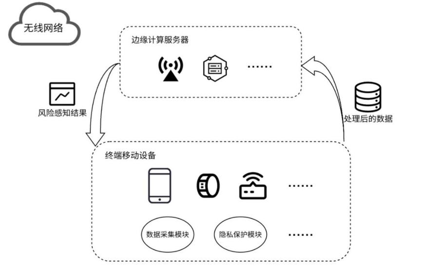
面向移动边缘群智感知的动态隐私保护闭环控制方法及系统
程冠杰, 温盈盈, 黄步添, 刘思扬, 赵新奎, 邓水光, 尹建伟
发明公开, CN202510883492.1, 2025.
本发明公开了一种面向移动边缘群智感知的动态隐私保护闭环控制方法及系统。本发明通过风险感知获取通信信道及数据内容相关的信息，计算多维度的综合隐私风险评分；然后，在策略决策阶段利用强化学习算法根据该风险评分动态确定差分隐私预算ε的取值；接着，在隐私保护执行阶段根据所述ε对群智感知数据进行噪声添加扰动，以实现预定的隐私保护级别；随后，在效果验证阶段评估已扰动数据的隐私泄漏风险和数据有效性，得到评估结果；最后，在反馈优化阶段根据评估结果调整隐私控制策略参数，将反馈应用于下一循环的风险感知和决策过程，从而形成闭环控制，不断优化隐私保护效果。本发明能够提高用户数据隐私安全性并兼顾数据可用性和能耗效率。
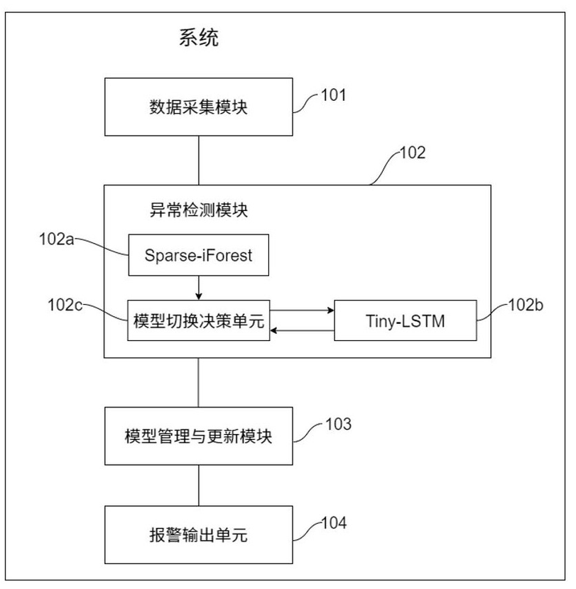
轻量化风险检测与异常感知方法及系统
程冠杰, 叶林辉, 袁巩生, 赵新奎, 邓水光, 尹建伟, 李鸿昇, 沈源里, 李嘉平
发明公开, CN202511098952.6, 2025.
本发明属于物联网终端与边缘计算技术领域，提出了一种轻量化的风险检测与异常感知方法及系统。在广泛的物联网终端和边缘设备场景中，结合轻量化稀疏建模的孤立森林（Sparse‑iForest）和微型长短期记忆网络（Tiny‑LSTM）进行异常检测；同时，能通过模型组合和切换策略兼顾不同的异常检测任务需求，引入模型在线更新机制实现更加具有实时性的效果。该方法可以实现可持续的可靠的异常风险监测，保持高效的异常检测的同时兼顾模型计算和内存开销。

区块链网络节点审核管理的隐私保护方法、系统及装置
黄步添, 罗春凤, 程冠杰, 刘健, 何钦铭, 沈玮
发明公开, CN202510817548.3, 2025.
本发明公开了区块链网络节点审核管理的隐私保护方法、系统及装置，具体实现：对候选节点生成节点匿名凭证并进行隐私认证，将认证后候选节点的敏感信息映射为不可逆的密码学哈希值，并存储于分布式密钥管理节点；构建动态可信审核组，从候选节点中选取验证节点，并经BLS聚合签名后上链存证；对验证节点的节点行为数据进行隐私化聚合计算，生成审核评分密文；通过属性基加密实现细粒度访问控制，审核策略动态绑定节点信誉等级；采用差分隐私机制对审核结果添加自适应噪声，通过对噪声量动态调整，满足ε‑差分隐私约束条件；奖惩执行阶段结合环签名与 stealth address 技术，使奖惩记录与节点真实身份脱钩，同时保证交易可追溯性。
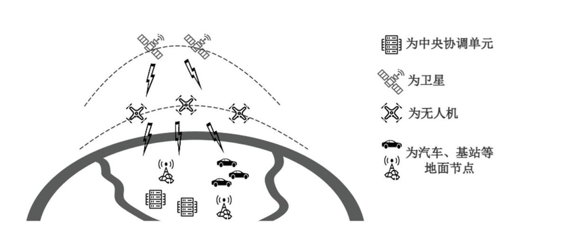
一种空天地一体化多智能体协同大模型在线训练方法及系统
程冠杰, 王泽坤, 王跃宣, 赵新奎, 邓水光, 尹建伟
发明公开, CN202510925639.9, 2025.
本发明公开了一种空天地一体化多智能体协同大模型在线训练方法及系统。本发明基于多节点资源异构性动态生成分布式混合精度量化配置表，为不同节点分配适宜的参数精度；采用跨节点梯度残差分发与局部补偿策略，在节点间仅传输压缩后的梯度残差并本地累积误差，定期进行高精度补偿更新；支持将模型参数和学习任务在多节点间弹性划分与动态调度，根据各节点性能和网络状况实时调整任务分配与模型切分；当出现节点失联或计算负载不均时，系统具备容错与自适应调度能力，能够自动重新分配模型片段或调整训练流程。本发明充分利用异构多智能体的算力资源，实现了在带宽受限、节点动态变化的场景下对超大规模模型的高效协同训练。
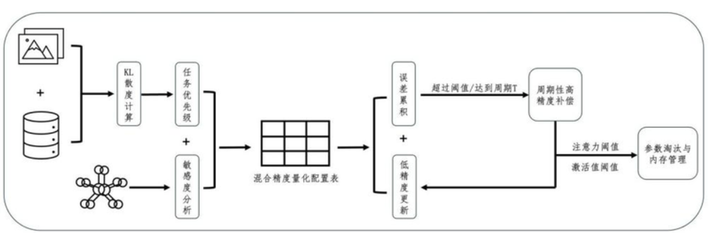
一种面向边缘设备的大模型混合精度在线增量学习方法及系统
程冠杰, 黄步添, 孟源泽, 赵新奎, 邓水光, 尹建伟
发明公开, CN202510925645.4, 2025.
本发明公开了一种面向边缘设备的大模型混合精度在线增量学习方法及系统。本发明首先对新到的增量数据进行分布偏移度分析，通过计算KL散度判断任务优先级；然后根据任务优先级、模型各层敏感度等，生成FP16与INT8混合精度量化配置表，将关键层赋予较高精度、次要层采用低精度；在在线训练过程中，对INT8更新产生的量化误差梯度进行累加，当累积误差超过预设阈值或达到一定周期时，以FP32精度进行补偿更新，消除低精度训练带来的误差累积；同时，通过统计注意力权重或激活贡献度，对持续低贡献的模型参数进行冻结或淘汰，从而降低内存负担。本发明能有效降低边缘设备的显存和算力消耗，同时保持较高的模型精度和旧任务记忆，适用于多种边缘场景。
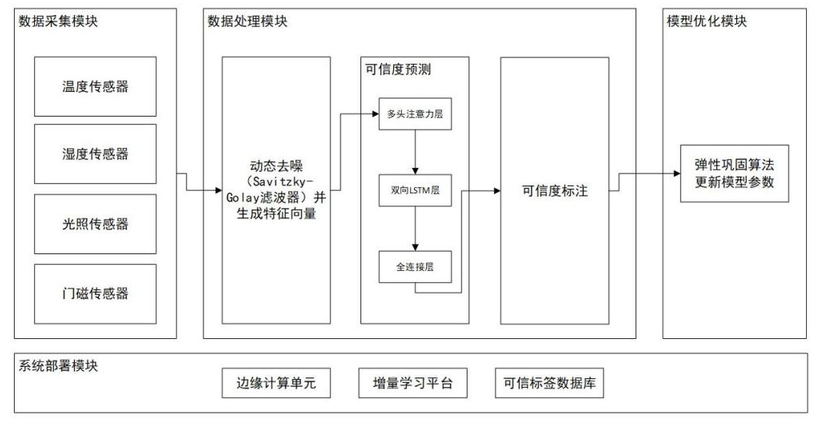
一种智能家居物联网数据可信度实时标记方法及系统
程冠杰, 王睿昊, 袁巩⽣, 温盈盈, 赵新奎, 邓⽔光, 尹建伟
发明公开, CN202510756158.X, 2025.
本发明公开了一种智能家居物联网数据可信度实时标记方法及系统，属于物联网和数据治理技术领域。该方法包括：通过动态窗口Savitzky‑Golay滤波器对多源传感器信号去噪；提取时序统计量、空间相关系数及设备元数据构建多维特征向量；采用多头注意力机制与双向LSTM融合模型输出实时置信度评分；基于ROC曲线优化动态阈值生成三级可信标签；结合弹性权重巩固算法实现增量学习。系统包含多协议接入模块、边缘计算单元及增量学习平台。本发明采用动态窗口滤波技术在保留真实信号特征的同时抑制高频噪声；通过多头注意力机制捕捉传感器间空间关联性，结合双向LSTM建模时序依赖关系；采用弹性权重巩固算法防止模型更新过程中的灾难性遗忘，确保长期稳定性。
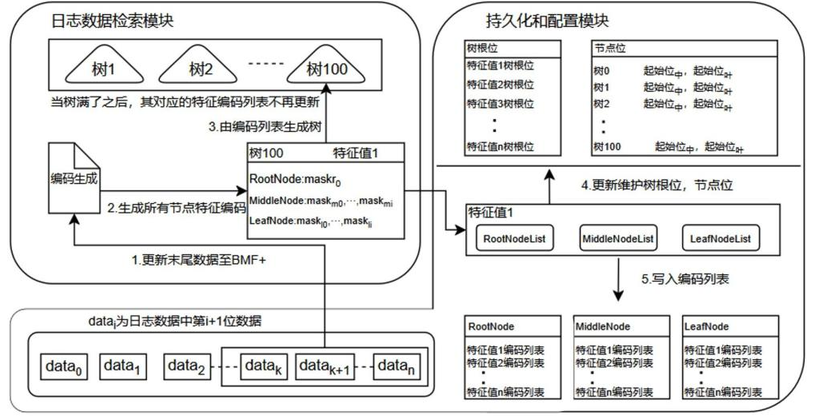
一种面向日志数据时序性的高效检索框架
程冠杰, 金鑫浩, 黄步添, 尚永衡, 熊礽荣, 赵新奎, 邓水光, 尹建伟
发明公开, CN202510756152.2, 2025.
本发明公开了一种面向日志数据时序性的效检索框架，旨在解决现有检索结构在日志数据规模不断增长时所面临的高维护开销和高检索成本问题，特别适用于海量日志数据场景。该框架由两个核心组件构成：日志数据检索模块和持久化和配置模块。其中，日志数据检索模块采用“惰性存储”策略，在保证数据完整性的同时降低存储与更新的开销。持久化和配置模块基于日志数据检索模块的“惰性存储”特性设计，主要用于支持高效检索框架中的数据更新，并提供适配日志数据检索模块新型存储模式的高效数据检索能力。本发明充分利用了日志数据的时序性，使得存储、维护及查询操作能够在常数级开销下完成，从而大幅提升系统在处理海量日志数据时的性能和扩展性。
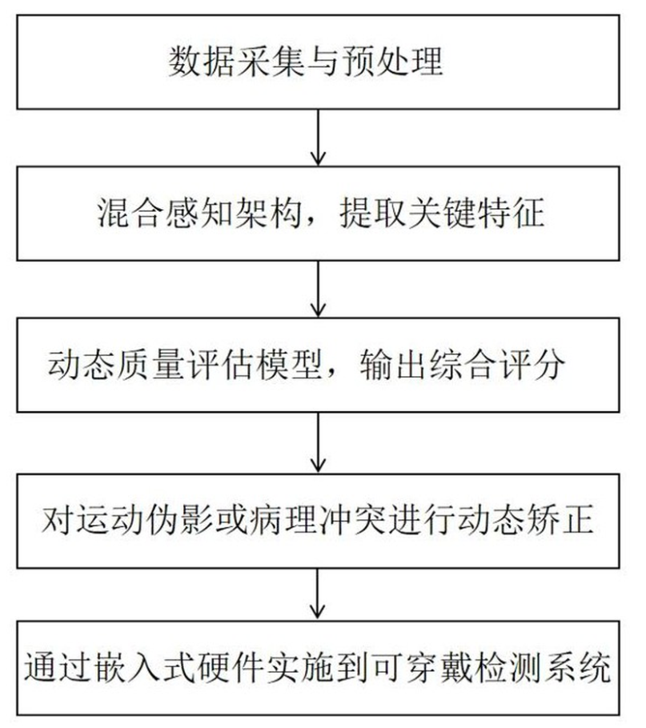
一种医学知识约束的多模态时序数据动态评估方法及可穿戴医疗系统
程冠杰, 王泽坤, 温盈盈, 尚永衡, 黄步添, 赵新奎, 邓水光, 尹建伟
发明公开, CN202510549115.4, 2025.
本发明公开了一种医学知识约束的多模态时序数据动态评估方法及可穿戴医疗系统。本发明通过改进的Swin‑Transformer时序编码器与图神经网络构建混合感知架构，嵌入医学先验掩码矩阵约束注意力机制，强化多模态生理信号的时序特征提取与跨参数关联建模；设计动态质量评估模型，融合数据完整性、跨模态一致性及诊断有效性指标，结合自适应权重函数实时调节评估权重，实现数据质量与临床诊断置信度的量化关联；当判定存在运动伪影或病理冲突时，启动异常定位与修正机制。本发明可随时监测运动伪影、干扰等噪声，并根据风险等级实时调整对不同指标的关注度，本发明还融合医学知识的多模态感知提高病理识别准确度与临床可信度。
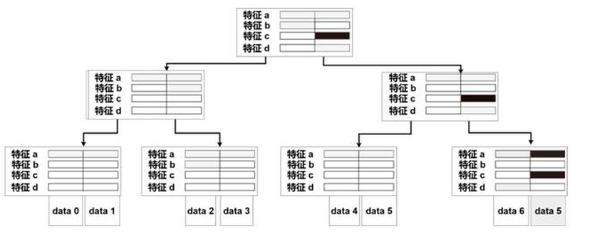
一种基于区块链数据不可篡改特性的分类检索方法及其衔接查询方法
赵新奎, 熊礽荣, 程冠杰, 智晨, 张旭鸿, 尹建伟
已授权, CN202410918721.4, 2025.
本发明公开了一种基于区块链数据不可篡改特性的高效分类检索结构及其衔接查询方法。本发明中的数据属性按特征进行分类，每个数据是否具有某一个特征用二进制的一个比特标识，其最终索引的数据保持区块链上数据的时序性；检索过程中以位运算和数学运算为主，最终检索得到的结果是满足条件的数据相对于第一个数据的相对偏移量，最后在数据文件中通过计算偏移量移动磁头进行精确I/O。本发明基于区块链上数据不可篡改的独特特性，能以常数数量级进行维护，具有极高的可扩展性；检索单个数据的复杂度也能降为常数数量级。同时提出了衔接查询，可以极大地减少检索开销，解决了现有区块链检索结构随着区块链上数据规模增大而导致的性能下降问题。
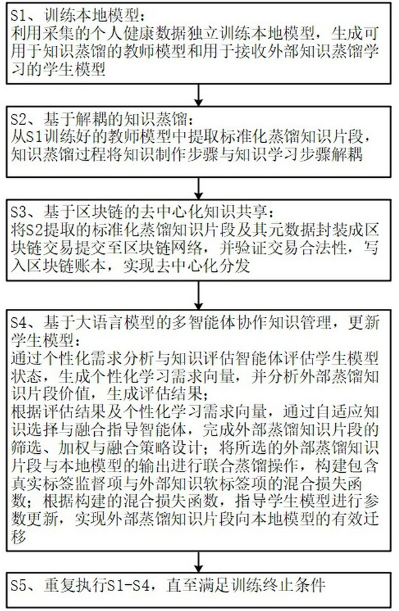
基于多智能体与知识蒸馏的联邦学习方法、系统及介质
熊晓芸, 吴云亭, 赵浩然, 赵小琪, 王金龙, 赵新奎, 程冠杰, 胡殿凯
已授权, CN202510855313.3, 2025.
本申请涉及联邦学习技术领域，公开了一种基于多智能体与知识蒸馏的联邦学习方法、系统及介质，方法包括：S1、训练本地模型；S2、基于解耦的知识蒸馏；S3、基于区块链的去中心化知识共享：将S2提取的标准化蒸馏知识片段及其元数据封装成区块链交易提交至区块链网络，并验证交易合法性，写入区块链账本，实现去中心化分发；S4、基于大语言模型的多智能体协作知识管理，更新学生模型；S5、重复执行S1‑S4，直至满足训练终止条件。本申请实现联邦学习过程中对知识的个性化选择、自适应过滤与高效共享，有效缓解由数据非独立同分布特性引起的客户端漂移现象，显著提升模型在异构数据环境下的收敛速度、整体性能与个性化水平，并优化客户端间的通信开销。
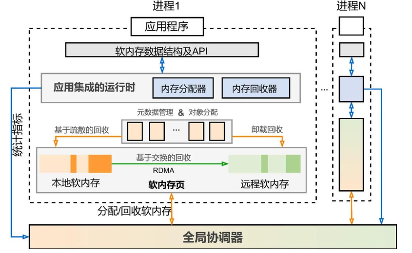
多应用部署场景下的分离式软内存管理方法
赵新奎, 戴卿, 陈振乾, 程冠杰, 尹建伟, 邓水光
发明公开, CN202510616834.3, 2025.
本发明公开了一种多应用部署场景下的分离式软内存管理方法。本发明充分考虑软内存系统和分离式内存系统在系统架构上的差异，设计统一的对象元数据格式以兼容重建和远程访问语义，采用元数据与实际数据分离存储的形式，以支持远程内存的高效卸载回收；运行时利用对象池管理应用程序的软内存，采用日志结构化的分配方式减少内存碎片，实现更高的分配效率；内存回收策略根据软内存的介质类型和使用率自适应调整，通过设置不同的阈值实现基于换出、疏散和强制回收的策略，通过监控本地和远程软内存资源，结合应用程序的潜在收益动态调整内存分配，确保软内存资源在多应用部署环境中高效利用。
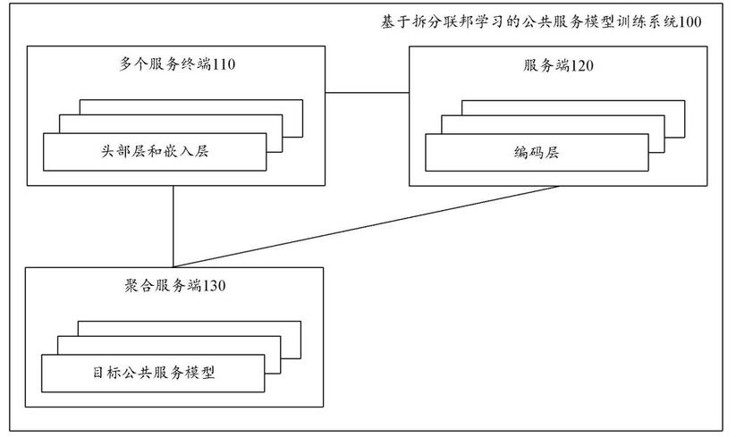
基于拆分联邦学习的公共服务模型训练系统
朱梦莹, 宋承昕, 郑小林, 阳梦园, 陈飞月, 程冠杰
发明公开, CN202510597449.9, 2025.
本说明书实施例提供基于拆分联邦学习的公共服务模型训练系统，包括：多个服务终端利用嵌入层生成本地服务问题数据的问题数据特征，获取服务端利用反馈的问题编码特征，将问题编码特征输入至头部层进行处理，获得预测作答数据，基于目标作答数据和预测作答数据对头部层进行更新，将头部层参数发送至聚合服务端，以及头部层梯度发送至服务端；服务端根据头部层梯度对编码层进行更新，并将编码层梯度反馈至多个服务终端；多个服务终端基于编码层梯度构建隐私梯度，并利用隐私梯度对嵌入层进行更新，将嵌入层参数发送至聚合服务端；聚合服务端基于各个服务终端发送的头部层参数和嵌入层参数对公共服务模型进行优化，获得目标公共服务模型。
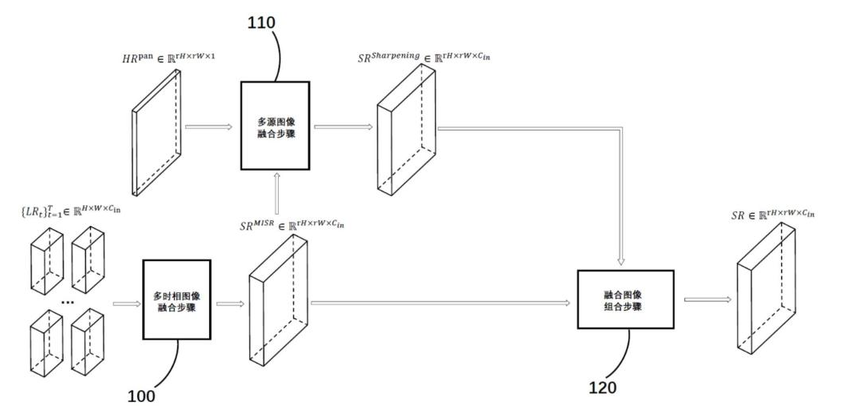
一种基于端到端架构的多模态卫星图像融合方法
程冠杰, 佟宇飞, 邓水光, 苏韬龙, 张翼, 赵新奎, 黄步添, 尹建伟
发明公开, CN202510445238.3, 2025.
本发明提供一种基于端到端架构的多模态卫星图像融合方法，属于人工智能多模态数据融合领域。针对多时相、多源卫星图像数据，方法包括多时相图像融合、多源图像融合及融合图像组合步骤。多时相图像融合步骤对低分辨率多时相多通道图像进行特征对齐、采样和融合，生成超分辨率多通道图像。多源图像融合步骤将高分辨率单通道图像与多时相融合图像结合，生成超分辨率多通道图像。融合图像组合步骤对上述融合结果进行像素级逐通道相加，形成最终的超分辨率多通道图像。本发明解决了传统卫星图像融合中多时相和多源融合分离、额外数据筛选需求高的问题，同时降低存储空间占用，减少卫星物联网数据传输压力。
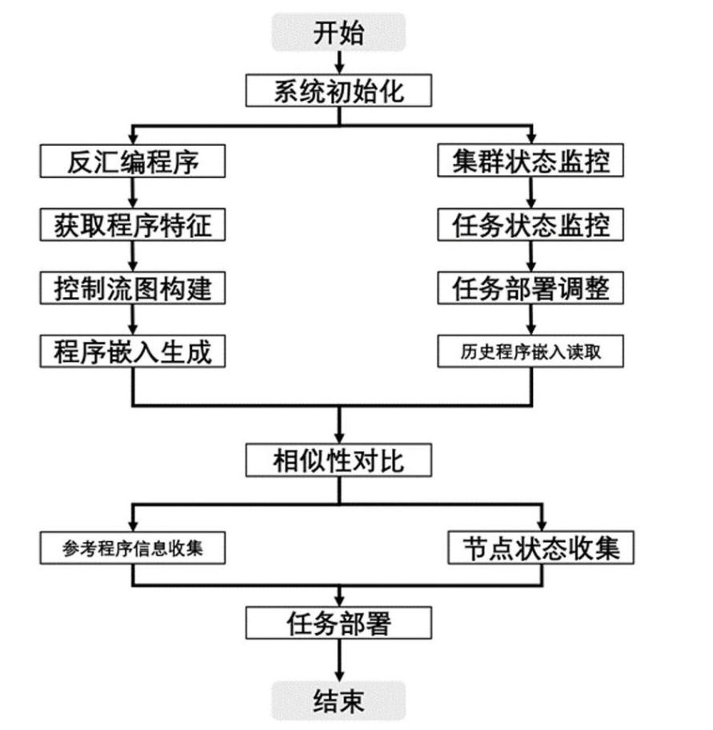
一种基于程序相似性分析的异构CPU集群调度方法
赵新奎, 马宇鑫, 程冠杰, 尹建伟, 邓水光
发明公开, CN202510471429.7, 2025.
本发明提供了一种基于程序相似性分析的异构CPU集群调度方法，涉及CPU集群调度技术领域。它包括通过汇编代码构建程序的控制流图，对ARM和X86指令进行统一的分类，控制流图节点聚合邻居节点的信息，使用Weisfeiler‑Lehman核方法对图进行相似性对比，其次，结合程序总体特征及库函数使用信息等从多个维度进行相似性分析，找到相似程序，获得程序的资源使用偏好，最后，基于集群节点的实时状态信息做出调度决策。本发明提升了程序性能并优化资源利用率。
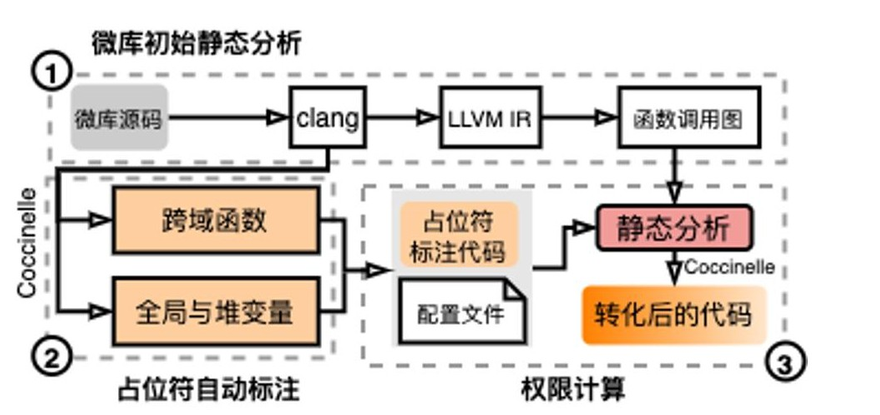
一种自动化库操作系统内-外隔离方法
赵新奎, 陈振乾, 祝越, 聂戬, 程冠杰, 邓水光, 尹建伟
发明公开, CN202510471210.7, 2025.
本发明公开了一种自动化库操作系统内‑外隔离方法。本发明首先对系统微库进行分析，自动检测并标记所有潜在需要设置隔离权限的变量和涉及跨域调用的函数；其次基于配置文件初始化库操作系统的微库组成，划分系统内共享的保护域以及允许外部访问的函数；随后自动化地计算变量权限并进行占位符转化，确定变量的权限级别和跨域执行的函数；在系统初始化启动阶段，根据确定的变量权限，将变量分配到对应的内存空间，实现系统内部的隔离，并为外部访问提供安全的远程服务接口；当外部调用者通过VMFUNC发起远程访问时，通过权限检查和访问栈的划分，确保外部访问只能访问到系统间隔离的变量，同时保证被调用者的内存访问安全，实现系统外部的隔离。
数据存储方法及相关设备
李波, 邓水光, 张翼, 秦臻, 程冠杰, 严学强, 赵明宇, 习燕
发明公开, CN202380081361.0, 2025.
一种数据存储方法及相关设备，该方法包括：第一节点先对第一数据进行加密得到加密数据，可以有效保障数据的机密性；第二节点再将加密数据拆分成P个分片；再由P个第三节点存储上述P个分片，即一个第三节点存储一个分片；其中，基于P个分片中的至少M个分片可以恢复得到加密数据，因此，即使P个第三节点中的个别节点被攻击，仍然可以基于P个分片中的至少M个分片恢复得到加密数据，有效保障存储的数据的完整性。
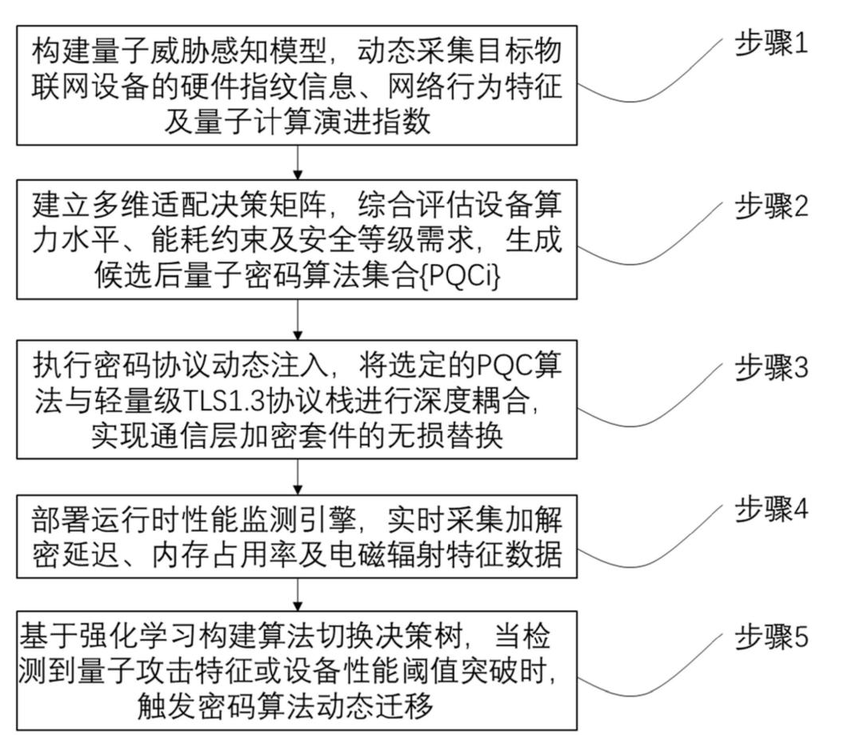
基于后量子密码的物联网测试平台适配方法、系统及装置
黄步添, 罗春凤, 程冠杰, 郑俊, 曹晟, 刘振广
发明公开, CN202510318184.4, 2025.
本发明公开了基于后量子密码的物联网测试平台适配方法、系统及装置，具体实现：构建量子威胁感知模型；建立多维适配决策矩阵，生成候选后量子密码算法集合；执行密码协议动态注入，实现通信层加密套件的无损替换；部署运行时性能监测引擎，实时采集加解密延迟、内存占用率及电磁辐射特征数据；基于强化学习构建算法切换决策树，当检测到量子攻击特征或设备性能阈值突破时，触发密码算法动态迁移。构建了量子威胁感知驱动的物联网安全适配体系，通过引入动态密码切换机制、硬件加速优化方案及可信执行环境，解决了传统物联网设备在后量子时代面临的安全升级难题。本发明可使资源受限设备的PQC算法执行效率得到提升，密钥更新时延降低。
一种身份管理方法及装置
邓水光, 程冠杰, 温盈盈, 严学强, 习燕, 李波, 王俊凡, 赵明宇
发明公开, CN202380080623.1, 2025.
一种身份管理方法及装置，可以应用于分布式的通信节点较多的场景，例如车联网场景，该方法包括：TA设备确定终端设备i的假名身份PID，并向终端设备i发送第一参数，第一参数用于指示终端设备i的PID。其中，终端设备i的PID是根据该终端设备i的真实身份RID确定的。基于此，TA设备可以为终端设备确定该PID，从而实现对终端设备的RID的保护，即实现对终端设备的隐私保护。并且，终端设备的PID与终端设备的RID关联，使得TA设备可以根据终端设备的PID确定终端设备的RID，在终端设备执行了恶意操作或非法操作的情况下，能够确定终端设备的真实身份。也就是说，实现对终端设备的隐私保护的同时，能够获得终端设备的真实身份，即实现了条件隐私保护。
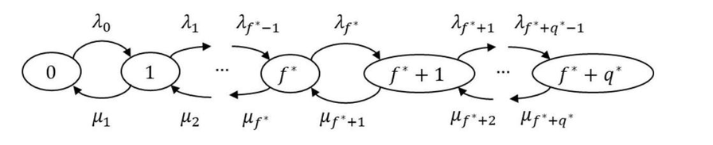
一种用于大规模Kubernetes集群的管控资源自适应分配方法及系统
赵新奎, 罗嘉胤, 尹建伟, 程冠杰, 邓水光
发明公开, CN202510161022.4, 2025.
本发明提供了一种用于大规模Kubernetes集群的管控资源自适应分配方法及系统，通过周期性采集多维度指标数据，预测组件负载，判定主节点与各组件的状态，再求解不同状态下的最优资源分配问题，得到资源自适应分配最优解。通过资源分配规则和反馈调节机制，确保资源自适应分配最优解的合法性和有效性，提高管控资源分配合理性，有效提高管控资源分配合理性，缓解资源争用问题，优化集群整体性能。
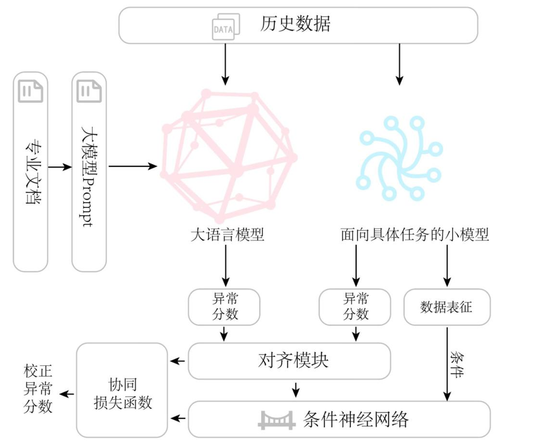
一种针对大小模型协同合作的异常检测方法
邓水光, 陈飞佚, 张磊磊, 秦臻, 程冠杰, 赵海亮
发明公开, CN202510242486.8, 2025.
本发明公开了一种针对大小模型协同合作的异常检测方法，使用大语言模型调阅专业技术文档，在大模型基于专业知识的指导下，小模型针对历史数据做针对性优化。具体而言，将专家知识作为prompt输入到大模型中，利用已有观测数据首先训练一个小模型。并在此基础上，以小模型重构误差为条件，以大模型、小模型异常分数为输入，输出一个综合异常分数。本发明的大小模型相互协同框架能够有效克服两者表达域差异以及误差积累问题，可在数据驱动模型中引入专家经验，并最终超越大小模型单独的异常检测表现，可减少大小模型协同过程中由于各自误差造成的误差累积。
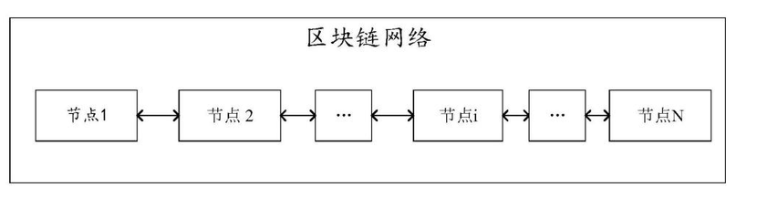
区块链数据查询方法、装置、系统及存储介质
邓水光, 张翼, 李波, 程冠杰, 严学强, 习燕, 赵明宇, 王俊凡
发明公开, CN202311488662.3, 2025.
一种区块链数据查询方法、装置、系统及存储介质。本申请提供的技术方案，全节点在接收到来自轻节点的数据请求后，基于数据请求确定满足查询条件的第一事件集，并生成用于证明该第一事件集可信的证明信息，以及向轻节点发送包括该证明信息和该第一事件集的请求结果；轻节点在接收到该请求结果后，可以基于该证明信息验证第一事件集是否可信，以实现轻节点在区块链网络中进行可信的数据查询。
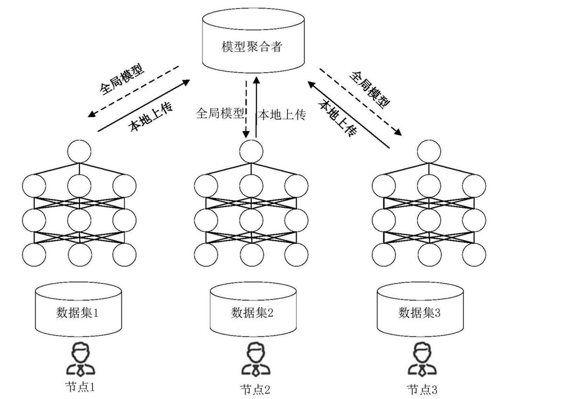
一致性验证方法和装置
程冠杰, 温盈盈, 邓水光, 严学强, 习燕, 赵明宇, 李波, 王俊凡
发明公开, CN202311229345.X, 2025.
一种一致性验证方法和装置，该一致性验证方法包括：第一装置生成n个密文，n个密文对应n个节点，每个节点对应一个密钥，每个密文是根据所对应的节点的密钥对明文进行第一加密确定的，n为正整数；第一装置获取挑战值；第一装置向第二装置发送n个响应值，每个响应值是根据随机值、挑战值和明文确定的，随机值属于第一装置确定的随机值集合；第二装置根据n个响应值验证n个密文对应的n个明文是否一致。根据本申请的方案，可以在保护明文隐私的前提下对分发的密文进行一致性验证，降低验证成本和安全隐患。
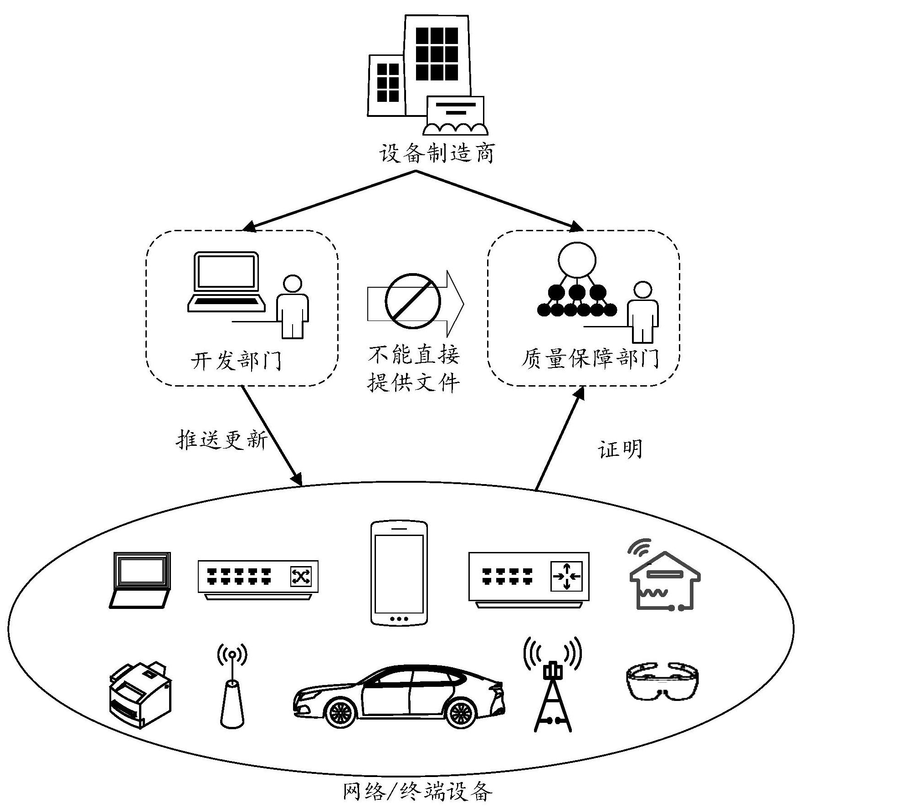
一致性验证方法和装置
程冠杰, 温盈盈, 邓水光, 严学强, 习燕, 赵明宇, 李波, 王俊凡
发明公开, CN202311231941.1, 2025.
一种一致性验证方法和装置，该一致性验证方法包括：n个第一装置接收n个密文，n个密文与n个第一装置一一对应，每个第一装置对应一个密钥，每个密文是根据所对应的第一装置的密钥对明文进行第一加密确定的，n为正整数；第二装置获取第一挑战值和n个密文对应的明文；第二装置向第三装置发送n个第一响应值，n个第一响应值与n个密文一一对应，每个第一响应值是根据第一随机值、第一挑战值和明文确定的，第一随机值属于预设的随机值集合；第三装置根据n个第一响应值验证n个密文对应的n个明文是否一致。根据本申请的方案，在不泄露明文的前提下，高效验证多装置接收密文的一致性，降低验证开销和安全隐患。
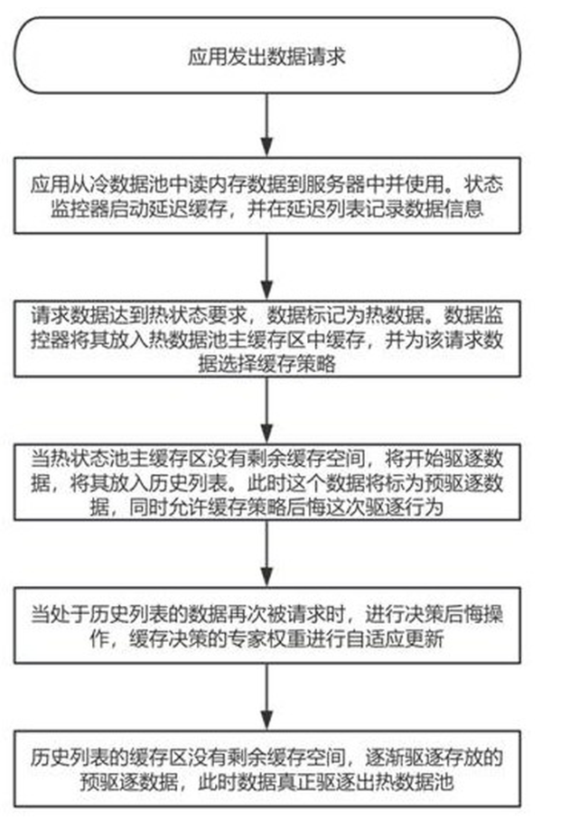
一种基于CXL内存架构的两级数据池数据加载方法
赵新奎, 杨牧宇, 尹建伟, 邓水光, 程冠杰, 智晨, 张旭鸿
发明公开, CN202411447447.3, 2025.
本发明公开了一种基于CXL内存架构的两级数据池数据加载方法，本发明将CXL内存作为冷数据池存储使用频率较低的数据，服务器节点的DRAM内存作为热数据池存储使用频率较高的数据。当一个CXL内存上的数据多次被使用时，数据监控器将通过延迟缓存策略判断是否能将其转移为热数据，并将其缓存。本发明还采用了自适应的缓存策略将热数据通过热数据池在服务器保留一定时间，提升应用性能。热数据池动态的学习缓存策略。每次添加热数据或驱逐热数据时，都将根据LRU‑S、LFU‑S和FIFO专家权重来选择缓存策略。同时热数据池包含历史列表，允许缓存策略的驱逐决策后悔行为，并对错误决策进行惩罚。
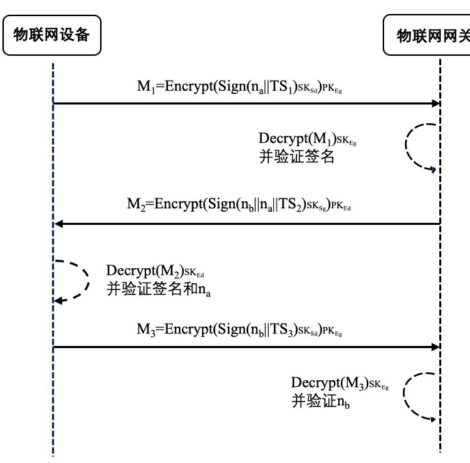
一种基于区块链技术的物联网可信数据管理方法
邓水光, 程冠杰, 尹建伟
已授权, CN202110856422.9, 2025.
本发明公开了一种基于区块链技术的物联网可信数据管理方法，将物联网数据面临的可信管理问题拆分为四个部分：可信设备认证、可信数据传输、可信数据存储和可信数据共享。本发明基于区块链技术为网关和边缘服务器构建了一个分布式、防篡改的通信网络，针对设备认证，本发明使用Diffie‑Hellman密钥交换技术针对物联网设备和网关设计了一个相互认证机制，并设计了一个会话密钥协商机制用于保障安全可靠的数据传输；对于数据存储，本发明使用Kademlia算法在边缘服务器网络中构建了一个分布式的安全存储方案；最后，本发明使用属性基加密技术实现了一个用户访问控制机制，保障了物联网数据的可信共享。
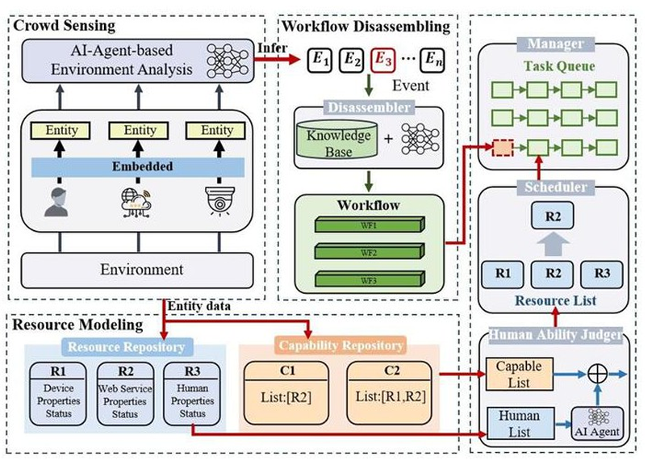
基于多智能体协同的人机物融合服务网络构建方法及系统
赵新奎, 李逸, 陈宸, 舒锦松, 智晨, 程冠杰, 邓水光, 尹建伟
发明公开, CN202411051339.4, 2025.
本发明公开了一种基于多智能体协同的人机物融合服务网络构建方法及系统。针对人机物融合场景，当不考虑人类这一元素或者对人类建模过于简化时，对人的能力进行更立体更多维的分析，构建人与能力的对应关系，实现更优化的人类建模方法；当面临系统可处理的任务和场景的固化、僵化时，通过定义资源‑能力框架，构建环境时序数据孪生体系、资源库和能力库，部署多个智能体，生成环境事件，拆解成可执行的工作流，牵引系统能力的自组织执行，提升人机物服务网络的灵活性和通用型，使系统能够适应不同的场景需求。该方法能够有效地集成现实世界人机物异构资源，有效解决了人机物服务网络人类建模简单化、系统固化的问题。
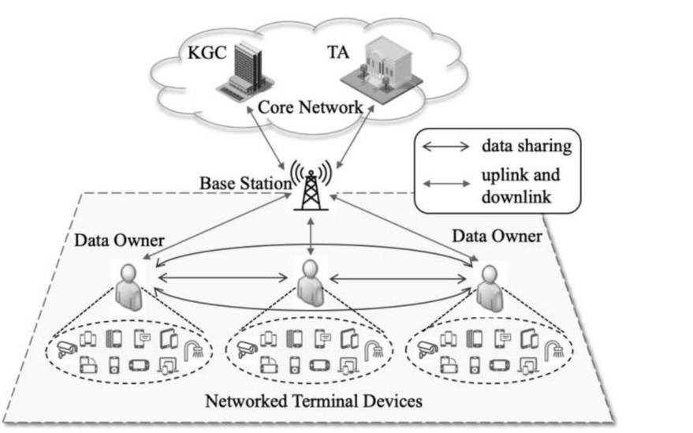
一种细粒度前向安全的无证书聚合签密方法
程冠杰, 苏韬龙, 邓水光
发明公开, CN202311831728.4, 2024.
本发明公开了一种细粒度前向安全的无证书聚合签密方法，该方法使用穿刺加密实现了细粒度的前向安全，保护了用户的隐私，可实现无证书加密，综合解决了物联网通信中密钥托管、身份撤回、前向安全和隐私保护的复合型问题；本发明算法一次性完成签名和加密，进一步加强通信安全性，不仅可以极大地提高通信安全性，而且能很好地保障用户的隐私，还可以降低密钥管理的开销，一举多得。
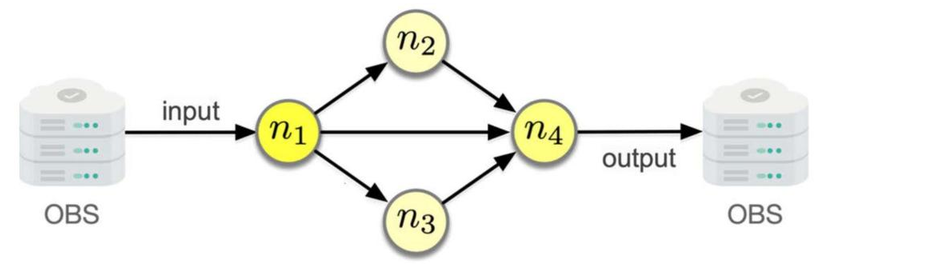
DAG作业调度方法及系统
赵海亮, 邓水光, 程冠杰, 尹建伟
发明公开, CN202410054049.9, 2024.
本发明公开一种DAG作业调度方法及系统，其中方法为，当作业的进度状态发生更新时，进行以下步骤：获取各作业的原生特征数据；基于图卷积神经网络对所述原生特征数据进行嵌入特征向量的提取，基于提取结果生成状态特征向量；将所述状态特征向量输入第一预测网络，由所述第一预测网络预测各候选任务被调度的概率，获得各候选任务的调度优先度；按照所述调度优先度从大到小的顺序，基于状态特征向量依次为候选任务选择分配节点，基于选择结果生成调度策略。本发明所提出的调度策略能够在全局上提高效率，还能降低作业执行过程中中间数据的缓存开销。
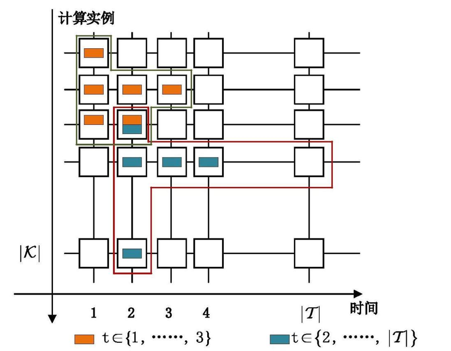
负载均衡方法及负载均衡器
邓水光, 赵海亮, 钱闻卓, 程冠杰, 尹建伟
发明公开, CN202410073454.5, 2024.
本发明公开一种负载均衡方法及负载均衡器，用于对具有截止日期的在线作业进行资源分配；为目标作业进行资源分配的步骤包括以下步骤：获取目标作业的工作负载、作业到达时间和作业截止时间；基于所述作业到达时间和作业截止时间从集群的资源单元中筛选获得候选资源单元，所述资源单元分别与时间段和资源节点相映射；获取各候选资源单元处理所述目标作业所能承受的最大负载；基于所述工作负载和所述最大负载确定待分配资源单元及相应的资源分配量，生成相应的资源分配策略。本发明通过对资源单元的设计，基于时间和空间两个维度考虑资源分配的方案，与现有先入先服务的方案相比，能够为具有截止日期的作业生成合适的资源分配策略。
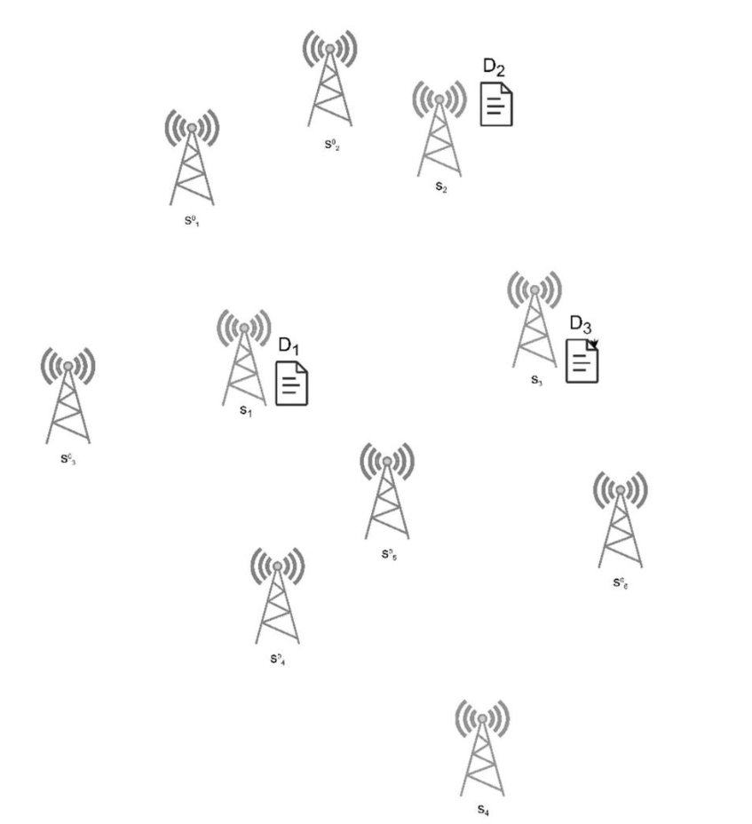
一种面向边缘服务器的长尾数据保护方法
邓水光, 张翼, 李波, 程冠杰
发明公开, CN202310857666.8, 2023.
本发明公开了一种面向边缘服务器的长尾数据保护方法，其使用了Reed Solomon算法分散存储数据，节省了数据备份的开销，充分利用了边缘服务器碎片化的存储空间；针对长尾数据特性，在数据完整性验证中，本发明设计了管理服务器广播正确数据哈希的机制，减少了数据验证的时间消耗；本发明还设计了根据损坏数据分片数量采用不同修复数据的策略，减少了数据修复的时间消耗和通讯开销。
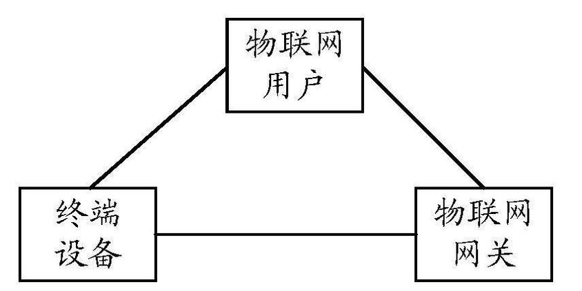
一种认证方法和通信装置
邓水光, 程冠杰, 温盈盈, 严学强, 赵明宇, 汪洋, 吴建军
发明公开, CN202111273493.2, 2023.
本申请实提供了一种认证方法和通信装置，由物联网网关为物联网用户和终端设备生成和配置认证标签，当发布协作任务时，物联网用户向终端设备发送加密后的物联网用户的认证标签，终端设备在接收到物联网用户的信息后将加密后的物联网用户的认证标签、以及加密后的终端设备的认证标签发送至物联网网关，由物联网网关根据接收到的信息对物联网用户和终端设备进行认证，并向终端设备提供对物联网用户进行认证的信息、以及向物联网用户提供对终端设备进行认证的信息，使得终端设备可以对物联网用户进行认证、以及物联网用户可以对终端设备进行认证。可以实现物联网用户和终端设备之间的双向认证。
软件著作权

基于大模型和物联网的智能户外辅助穿戴系统（智能户外马甲系统）V1.0
程冠杰,刘思扬, 金鑫浩, 杨孟臻, 赵新奎, 邓水光
原始取得, 全部权利, 2025SR1946637, 2025.
为老年人、儿童和残障人士提供户外安全防护与健康监护，提升特殊群体独立生活能力。 面向智慧康养（养老/医疗）、特殊人群关怀（残障/儿童监护）、户外运动（登山/钓鱼）及特种作业安全领域。本软件基于树莓派平台，结合YOLOv8模型与多种传感器，支持目标识别、障碍检测、语音交互、定位追踪。通过摄像头识别周围人或障碍物，结合超声波传感器进行距离测量，并通过麦克风与扬声器实现语音提示与交互；震动马达触觉提醒+音响语音警报双通道输出提供了多模态预警。定位模块可实现实时追踪，辅助特殊人群安全出行。语音交互模块实现实时语音问答，实现紧急求救、天气播报等功能。
Last updated: Nov 2025